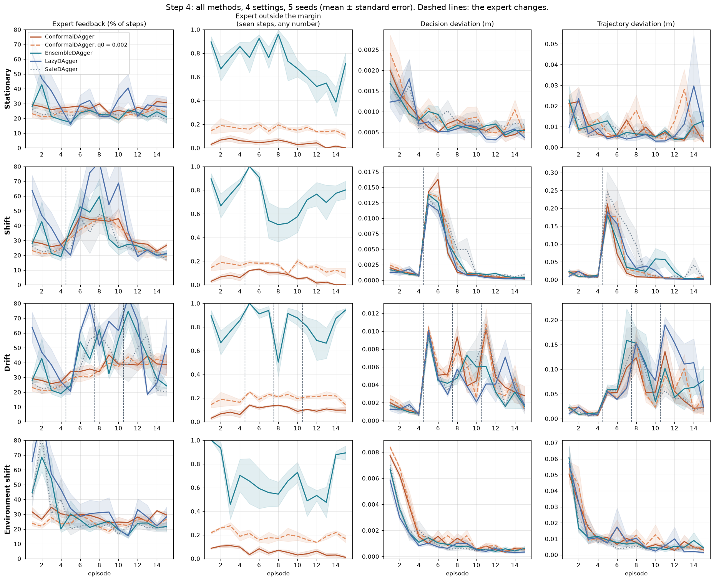

Step 6 · results
Results
Every number on this page was measured by running the code. Where my result differs from the paper, it says so.
1
Progress
How the rebuild was done, step by step.
- Plan and explainer site writtenAll six steps described with examples, before coding.
- Step 1 done: task and expertenv.py written; test_env.py passes 15/15 checks; expert paths plotted (see Step 1).
- Step 2 done: learner and DAgger looppolicy.py, dagger.py; 30 runs, all 4 checks pass. Feedback every step recovers from the shift by episode 8; random 20% feedback recovers unevenly; no feedback never does (see Step 2).
- Step 3 done: IQT and ConformalDAggerWorked examples match; the printed miss sign is a typo (s > q is right). After the shift the robot's own questions rise from about 7% to 27% and fall back once relearned; it relearns faster and more steadily than random 20% feedback. Same pattern as the paper, but smaller and one episode later, because my margins are wider (see Step 3).
- Step 4 done: baselines and full grid100 runs. ConformalDAgger relearns fastest after the shift and stays calibrated; the ensemble's margin misses 80–100%. Not reproduced: asking twice as often as the ensemble at the shift (see Step 4).
- On a real arm: UR5e + Robotiq 2F-85 in MuJoCoarm_env.py (same interface, IK + joint servos, measured state); test_arm_env.py 8/8; ConformalDAgger runs unchanged and shows the same shift pattern over 5 seeds. Studio replay page and four clips (see below).
- Step 5: reactions extensionDesigned (versions A–D), not run yet. See Step 5.
2
Reproduction vs the paper

| Claim in the paper | This rebuild | |
|---|---|---|
| ConformalDAgger's margin stays near its coverage target; the ensemble's does not | ConformalDAgger 6% before, 13% peak (cautious); ensemble 80% before, 100% at the shift | Reproduced |
| After an expert shift, ConformalDAgger adapts better | Closest to the new goal: 0.058 / 0.031 / 0.012 m (eps 5–7), best of all methods | Reproduced |
| It asks more after a shift, then less once relearned | Robot's own questions 7% → 27% → 6%; total feedback 27% → 46% → 26% | Reproduced (smaller jump) |
| At the shift it asks about twice as often as EnsembleDAgger (60% vs 30%) | 34% vs 38% at episode 5; the ensemble peaks later (60% at ep 8) | Not reproduced |
| LazyDAgger asks more when nothing changes | 44% vs 27% (eps 1–4) | Reproduced |
| The printed miss test err = (s < q) | Never misses and the margin balloons; s > q works | Typo found |
2b
On a real arm: UR5e + Robotiq 2F-85
The same learner, DAgger loop and IQT, now driving a MuJoCo UR5e (models from MuJoCo Menagerie). The learner still outputs the next cup position; IK turns it into joint angles and the arm's servos move it, so the new state is where the cup really got to. The mug is fixed in the gripper (no grasp physics: the paper is about when to ask, not about grasping).
| Shift, episodes 5–9, 5 seeds | Point cup | UR5e arm |
|---|---|---|
| Robot asks for help | 12 → 27 → 23 → 25 → 19% | 16 → 33 → 31 → 27 → 35% |
| Back to normal asking | by episode 11 | by episode 10 |
| Steady teacher: robot asks | about 6% | about 6% |
Each clip shows one recorded run (seed 0) from the studio replay page, then the 5-seed numbers. Green gripper = robot acts alone, amber = robot asked, blue = teacher stepped in on their own. The box is the robot's margin; the faint blue mug is what the teacher would do.
3
Reactions extension
4
Choices and differences from the paper
Everything I had to decide because the paper doesn't say, or says it unclearly.
| Item | Paper | This rebuild |
|---|---|---|
| Start and goal positions | not given | start (0, 0, 0.1); g0 (0.3, 0.15, 0.1); g1 (0.3, −0.15, 0.1); drift goals in between |
| Demo noise | "N(1, 0.5)" | Gaussian push, standard deviation 0.003 on x, y, z |
| End of a demo | not stated | 5 extra steps holding the cup at the goal, so the robot learns to stop |
| Input/output scaling | not stated | network predicts the change from the current state (×100), inputs ×10; output is still the next state |
| "Reached the goal" | not stated | closest approach within 0.03 when the robot drives alone |
| Hidden layer size | not given | 256 |
| Buffer when full | "capped at 300" | keep the newest 300 |
| Miss test sign | err = (s < q) | s > q (tested: the printed sign never misses and the margin grows to 0.24) |
| Baseline thresholds | 0.06 / 0.03 / 0.01 (own units) | calibrated so each baseline asks 7.1% of steps when nothing changes, like ConformalDAgger (calibration seeds 90–92) |
| EnsembleDAgger's action | ensemble (assumed) | main policy acts; two extra networks only measure disagreement |
| Step-size floor | not stated | B̂ at least 0.0001, so the gripper's margin (errors about 0) still updates |
| Per-side miss rate | 90% coverage overall | α = 0.05 per side |